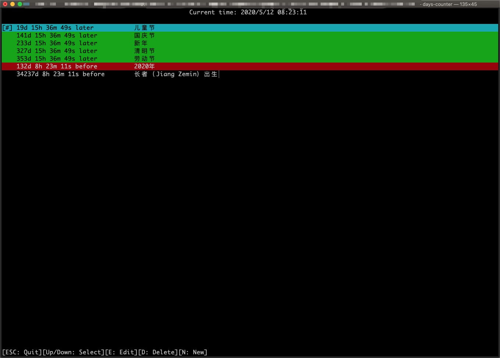

人之一生，众多过往，众多期望。其过往者，回忆无限。其期望者，希望无穷。
时光荏苒，岁月如梭，期望终至，终成过往。年少者，未来之希望也，必众多期望。年长者，岁月沧桑，必众多回忆。
乃时光不可倒流，回忆终将仍为回忆，只偶然于脑海浮现，而若忘之，则无也。期望者，前行之动力也，人无期望，则如鸟无虫、牛无草、蜂无花者，凄也。故回忆与期望，均不可忘之。
此乃随笔，文采稍逊，一笑而已。
(This is too difficult for me to write it down in English, and it is not so important.)
此程序会对一些即将到来的重要事件进行倒计时，对一些已经过去的事件进行正计时。
同时，程序支持循环功能，若您想要倒计时至一个节日（或生日），您不必每年都重新修改一遍事件，只需要将事件设置为按年循环即可。程序支持三种循环模式：按秒循环、按日循环、按年循环。
如果计划有变，您可以修改一个事件，而不必重新创建事件。如果计划取消，您可以删除事件。如果计划新增，您可以增加事件。此乃最基础之功能也。
程序运行截图：

This program supports to run in Windows, macOS and Linux. Please download the zip and extract ALL files in it to the same folder, then double click to run.
程序有Windows版本、macOS版本和Linux版本，请下载对应版本后，将压缩包中所有的文件放置到一个同一个文件夹中，然后双击运行。